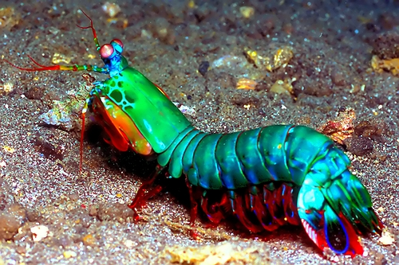

Fatos sobre o Stomatopoda.
Classificação Científica:
| Nome Científico | Odontodactylus scyllarus |
|---|---|
| Reino | Animalia |
| Filo | Arthropoda |
| Subfilo | Crustacea |
| Classe | Malacostraca |
| Subclasse | Hoplocarida |
| Ordem | Stomatopoda |
Como uma bala:
Possui 2 presas que são tão rapidas como um tiro de um rifle .22 e em menos de 3milisegundos pode atacar uma presa com 1500 newtons de força.
The Flash:

Ele se move tão rapido que além de aquecer a água a temperaturas absurdamente altas e desencadear um processo conhecido como supercavitação, seu golpe também provoca uma pequena onda de choque, capaz de desorientar e até matar suas presas. Esse mecanismo, inclusive, é conhecido por interferir na comunicação via sonar entre embarcações.
Estripador:

Desmembramente é a principal forma que ele mata suas presas.
Robocop:
Seu corpo é tao resistente que cientistas e pesquisadores estudaram a estrutura de suas células para tentar desenvolver poderosas armaduras corporais de combate.